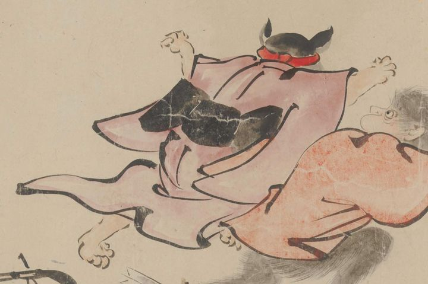

← 图鉴索引

女物の赤い着物に黒い帯を締め、赤い鉢巻きのようなものをした猫の妖怪が人間に背を向けて逃げている。
出典：親書誌：U426_nichibunken_0435：［妖怪絵巻］／日付：2017／資源識別子：U426_nichibunken_0435_0001_0039
Copyright (c)2010- International Research Center for Japanese Studies, Kyoto, Japan. All rights reserved.